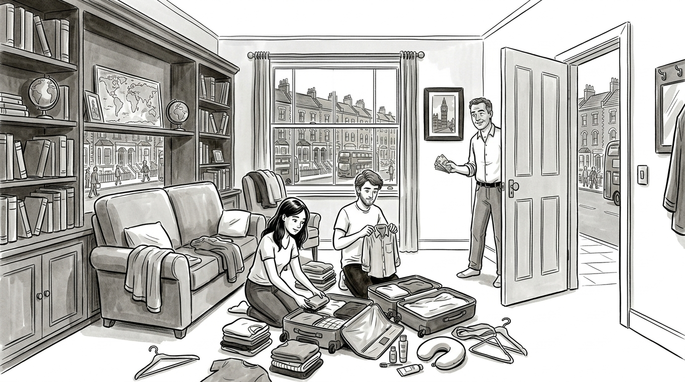
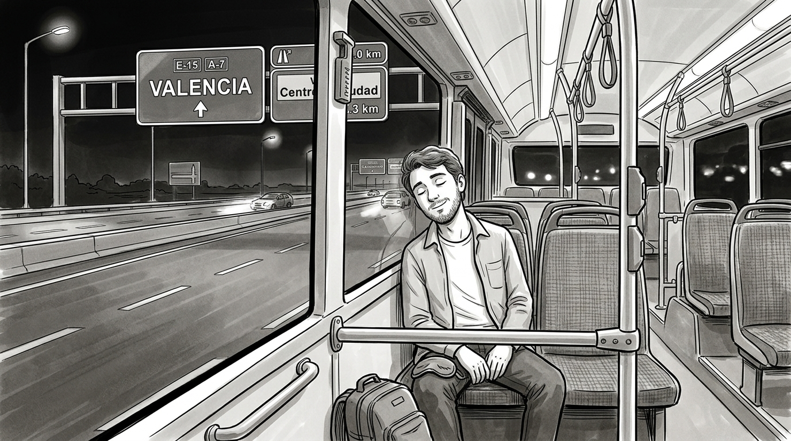
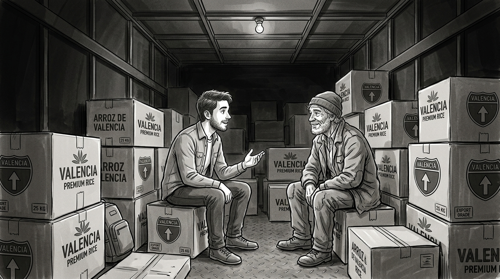
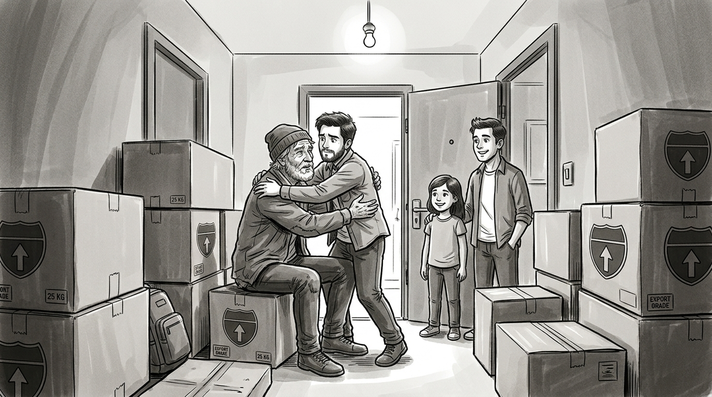

Olly Richards · Short Stories in English for Beginners · Story 1
How to use this page: the story has 4 chapters. Use the buttons at the bottom of the screen to change chapters. Words with a dotted gold line are new vocabulary. Tap or click a word to see the meaning and an example. Tap 🔈 to hear the word. Use A+ and A− to change the text size.
Chapter 1— Getting ready.

‘Daniel, I’m here!’ Julia calls. She is at the front door of the house.
‘What is it, Julia?’ I reply.
‘We’re going to Spain today! You remembered, right?’
‘Of course I did. I’m packing!’ I call.
My name is Daniel. I’m 24 years old. Julia is my sister. She is 23. We’re both in college. We share a house in London. Our parents are Arthur and Sarah Bell.
Julia and I are getting ready for a trip. We’re going to Barcelona, Spain. We’re both earning degrees in Spanish. We already know a lot of the language, but we want to learn more. We’re going to be exchange students this term.
I’m tall, about six feet. I have longish brown hair. My eyes are green and I have a wide mouth. I have a strong build. My legs are strong due to hours on the tennis courts. I’m a very good basketball player as well.
My sister Julia also has brown hair. Her hair is longer than mine. She doesn’t have green eyes. She has brown eyes like my dad. I have the same color eyes as my mom.
My parents both work. My dad is an electrician. He works for a major electric company. My mom is a writer. She also owns a company. It sells science fiction books.
My parents are really great. They always help us to reach our goals. They both speak Spanish well. They often speak to us in Spanish. It helps Julia and I practice. They really encouraged us to become exchange students. We are leaving for Spain today.
My dad comes in my room. He looks at me in surprise. Why? Because I’m not dressed. ‘Daniel! Why aren’t you dressed?’ Dad asks.
‘Dressed? I just got up. I had a shower five minutes ago. I’m not even dry yet!’
‘Come on! We don’t have much time. I want to take you to the airport. But I have to go to work, too.’
‘Don’t worry, Dad. I’m getting dressed now.’
‘Where’s your sister?’
‘She’s in her room.’
My dad goes into my sister’s room. He wants to talk to her. He enters and Julia looks at him. ‘Oh, hi, Dad. Do you need something?’ asks Julia.
‘Yes. Your brother’s getting dressed. Here.’ My dad gives Julia a wad of cash. ‘I want you to both have this.’
Julia is surprised. ‘Dad! There’s a lot of money here!’ she says.
‘Your mother and I have saved this money. We want to pay for part of your trip to Spain.’
‘Thanks, Dad!’ says my sister. ‘It will be very useful. I’m going to tell Daniel!’
Julia turns to leave. She almost runs into me. She and Dad didn’t notice that I was coming in. My dad sees me. ‘Oh, Daniel, you’re here!’ he says. ‘And you’re dressed! Great!’
My dad points to the money. ‘That money is for the two of you. It’s to help with the trip.’
‘Thanks, Dad. It’ll be really helpful,’ I reply.
Julia smiles.
‘Now we must get ready,’ Dad says. ‘We have to leave for the airport! Come on!’
Shortly after we eat, we leave the house. We head for the airport in Mom’s car. Julia is very nervous.
‘Julia,’ Mom says, ‘are you all right?’
‘I’m really nervous,’ Julia answers.
‘Why?’
‘I don’t know anybody in Spain. I’ll only know Daniel.’
‘Don’t worry,’ Mom replies. ‘There are a lot of very nice people in Barcelona. Especially Daniel’s friend Armando.’
‘Yes, Mom. I’m sure you’re right. But I still feel nervous. What if something happens?’
‘It will be all right,’ says Dad.
At the airport there are lots of people checking in. Many of them are traveling for work. Some are traveling for fun. I go over to Julia. Then I ask, ‘Are you more relaxed now?’
‘Yes, Daniel. I was really nervous in the car.’
‘Yes, I know. But everything’s going to be fine. My friend Armando is really nice. He often helps exchange students like us.’
Our parents hug us warmly. We all wave goodbye as Julia and I leave.
‘We love you both!’ they call. That’s the final thing we hear. An hour later, our plane takes off. We are headed for Barcelona!
Chapter 2— Spain.

Our plane lands in Barcelona. My friend Armando is waiting at the airport.
‘Hi, Daniel!’ he says. He gives me a big hug. ‘I’m so happy you’re here!’
‘Hi, Armando! It’s great to see you!’ I reply.
Armando looks at my sister Julia. I introduce them. ‘Armando, my friend, this is my sister Julia.’
Armando turns to Julia. He kisses her on each cheek. ‘Hi, Julia. Pleased to meet you!’
My sister is very shy. She’s especially shy when she meets new people. ‘Hello ... Armando,’ she says. Her face turns red. Then she becomes quiet.
‘Your sister is really shy, isn’t she?’ Armando says to me, smiling.
‘Yes she is, but she’s lovely,’ I say.
A short while later we head for Armando’s apartment. We are staying there for the term. We get a taxi. After 30 minutes, we arrive in Barcelona center. The taxi costs 41 euros and 50 cents. Armando says it’s the usual rate to this section of the city. We pay for the taxi and get out.
It’s a short walk to Armando’s apartment. It’s June and it’s really hot. But there is a nice wind to cool us.
We arrive at the apartment at lunchtime. My sister and I are really hungry.
‘Armando,’ I say, ‘where can we eat?’
‘There are a couple of good restaurants in the area.’
‘What types of food do they have?’
‘One of the restaurants, La Paella Loca, has a great paella. I really recommend it. You can take the bus there. The other one has lovely fish. It’s just next door.’
‘Julia, do you want to have paella?’ I ask my sister.
‘Yes! I’m so hungry!’ she replies.
Armando can’t come with us. He is a teacher and he has a class. So Julia and I head for the paella restaurant. It’s a short walk to the bus station.
‘Hmm... Now, which bus goes to the paella restaurant?’ I ask Julia.
‘I don’t know ...’ she replies. ‘Let’s ask.’ She points to a man in a white shirt.
We walk over to the man. He smiles. ‘Hello! Can I help you?’
‘Hi. How do we get to La Paella Loca restaurant?’ I ask.
‘It’s easy! The number 35 bus goes in that direction. It goes right to La Paella Loca. However, there’s a small problem.’
‘What’s that?’ I ask.
‘That bus is normally packed at this time.’
‘OK. Thank you!’ we say.
As we walk to the nearest bus stop, Julia and I talk. She is not comfortable with taking the bus. ‘Daniel,’ she says, ‘Let’s just eat at the fish restaurant. It’s easier. I don’t want to take a packed bus.’
‘I know...’ I begin. Then I have an idea. ‘Wait! I’ll take the bus to La Paella Loca. You go to the fish restaurant.’
‘Why?’
‘Because that way we can compare the two restaurants.’
‘Oh. Good idea. OK. Enjoy! I’ll call your phone later,’ she calls and walks off.
I get on the next bus and sit down. I’m very tired. I quickly go to sleep. The bus system in Barcelona is very good. I know there is nothing to worry about.
I wake up a while later. The bus has stopped. There’s no one else on it except for the driver. ‘Excuse me,’ I say. ‘Where are we?’
‘We’ve arrived in Valencia,’ he replies.
‘What? Valencia? We’re in Valencia? How can that be?’ I say.
‘Well this is the express bus. It goes directly from Barcelona to Valencia,’ he tells me.
I can’t believe it. I took the wrong bus. But what can I do?
I thank the driver and get off the bus. Then I take out my phone. I want to call my sister, but I can’t turn it on. My battery has died! I check my watch. It’s just after five o’clock in the afternoon. My sister doesn’t know where I am. She must be really worried. I have to contact her. I need a phone box!
I ask a woman on the street for a phone box. ‘There’s one,’ she says, pointing. ‘It’s just over there.’
I thank her and head for the phone box. But when I get there, I realize something. Julia’s phone number is in my phone’s memory. I can’t turn my phone on. I finally have a phone, but I don’t have a number! Now what?
I think for a while. Then I realize something. I’m really hungry. I haven’t eaten since breakfast! I decide to find a restaurant. I can think about my problems later.
I find a restaurant up the street. The waiter comes to my table. ‘Good evening!’ he says happily.
‘Good evening,’ I reply.
‘What would you like?’ he asks slowly in Spanish.
I look quickly at the menu. ‘I’d like paella?’ I say in Spanish.
‘Sorry? I didn’t understand you,’ he answers in Spanish.
I try again. My Spanish can’t be that bad. ‘Um... I’d like paella?’ I point madly at the word paella on the menu. Then I say it again in English.
Finally, the waiter then smiles and says in English, ‘Thanks. I’m not from here. I’m new and my Spanish isn’t that great.’
I start to laugh very loudly. A lot of people in the restaurant turn and look. At this point, I’m embarrassed. I didn’t need to laugh so loudly. But I don’t care. It’s all too much. This whole situation is just so strange! My sister and I wanted to have paella together. And now here I am, eating paella - but alone in Valencia! And my sister doesn’t know where I am. It’s so ironic!
I finish dinner and pay the bill. Then reality sinks in. What do I do now? My phone doesn’t work. There is a phone box, but I don’t have my sister’s number. What can I do? Then I remember. I can call London! I know the number to my mom and dad’s house.
I go back to the phone box. I call my parents’ number. It rings four times. Finally my mom says ‘Hello?’
‘Hi, Mom. It’s Daniel.’
‘Daniel?’ she says. ‘How are you? How’s Barcelona?’
‘It’s good. Um ... Mom. I have a problem.’
‘What’s wrong? Has something bad happened?’
‘No, nothing bad, Mom. Can you call Julia, please? Tell her that I’m in Valencia. And tell her that my phone battery has died.’
‘In Valencia? What are you doing in Valencia?!’
‘It’s a long story, Mom. I’ll tell you the details later.’
We say goodbye.
I decide to get a hotel room. There is one available up the street. I can go back to Barcelona tomorrow. Right now, I need sleep.
I pay for a night’s stay in cash. I use the money from my dad. I have no credit cards with me. I go to my room. I take off my clothes and get into bed. I turn off the light and go to sleep. I’m really tired. What a crazy day!
Chapter 3— The motorway.

I wake up early at the hotel and have a shower. I order some food to my room. I have little money at this point. But I’m hungry again so I take my time and enjoy.
After that, I get dressed and leave. I notice the time on a clock in the hall. It’s ten o’clock in the morning. I wonder if Mom has talked to Julia yet. My sister is a nervous person. I hope she’s all right.
I get to the hotel entrance. As I leave, I stop to think. ‘How am I going to get back to Barcelona? I spent most of my money on the hotel. I don’t know where a bank is. I can’t get money from my account. And Julia is probably waiting for me. I need a solution - fast!’
Then I notice two workers. They are carrying boxes towards a lorry. On the lorry, there’s a picture with the name of the company. I look more closely. Then I start laughing very loudly. I stop myself quickly. I don’t want to be embarrassed again! I can’t believe it. The picture on the lorry is of paella. It’s a lorry from La Paella Loca restaurant!
I go over to one of the workers. ‘Hello,’ I say.
‘Good morning,’ he answers. ‘How can I help you?’
‘Do you work for this restaurant in Barcelona?’ I ask and point to the picture on the lorry.
‘No, I’m just a lorry driver,’ the man says.
‘Do you know the restaurant La Paella Loca?’
‘Yes, we bring rice there every week. It’s for their paella, but I don’t work there.’
The driver gets into the lorry. Suddenly, I have an idea! ‘Excuse me?’ I say.
‘Yes?’ the driver answers.
‘Could you take me back to Barcelona?’ I ask.
‘Now?’ he says.
‘Yes,’ I reply. ‘I have little money. I must get back to my sister!’
The driver stops to think. Then he replies. ‘OK, I guess so. Get into the lorry. Sit between the rice boxes. And don’t tell anybody!’
‘I won’t. Thank you,’ I say.
‘No problem,’ he says. Then he adds, ‘Quickly, please. I have to leave now. I can’t be late!’
I get into the back of the lorry. I sit down between a couple of boxes of rice. The driver starts the lorry. We head for Barcelona. I think it’s a great idea. A lorry is faster than a bus. I can gain some time that way. And, it costs me no money. I sit back happily to enjoy the ride.
It’s very dark in the back of the lorry. I can’t see anything. I can just hear the lorry’s engine and the cars on the motorway. Then, suddenly, something in the lorry moves. There’s another person among the rice boxes!
‘Hello?’ I say.
Silence.
‘Who’s there?’ I ask in English.
More silence. I know someone is there. He or she is between the boxes.
Finally, I get up and walk over. What a surprise! It’s an old man. He’s hidden between the boxes.
‘Excuse me,’ I say, ‘But who are you?’
‘Leave me alone, please,’ the man answers. He speaks perfect English!
‘What are you doing here?’ I ask.
‘I’m traveling to Barcelona.’
‘Does the driver know you’re here?’
‘No, he doesn’t. I got into the lorry while you were talking to him.’
‘I see ...’ I say.
Suddenly, the driver stops. He gets out and heads towards the back. The old man looks at me with concern. ‘Why did he stop?’
‘I don’t know.’
There’s a sound at the back door.
‘I have to hide!’ says the man.
The driver comes into the lorry. He only sees me. The old man is hiding behind the boxes.
‘What’s going on in here?’ he asks me.
‘Nothing.’
‘Who were you talking to?’
‘Me? Nobody. There’s no one else here. Can’t you see?’
‘Listen. We’re not in Barcelona yet. Be quiet. I don’t want any trouble. Understand?’
‘I understand,’ I reply.
The driver closes the door. He goes back to the driver’s seat. At that same moment, the old man comes out from between the boxes. He looks at me with a smile. ‘I’m lucky that he didn’t see me!’ he says.
‘Yes, you are,’ I say. ‘So, tell me. Why are you traveling from Valencia to Barcelona in a lorry?’
‘Do you really want to know?’
‘Yes, of course!’
‘Allow me to tell you a little story.’
‘Please! It’s a long ride.’
The old man tells me his story. ‘I have a son, but I have never met him. His mother and I were together many years ago. We weren’t really a perfect match. But I loved her. Then I went to the United States. It was for a job opportunity. The job didn’t go well. I couldn’t get back.’ He paused. Then he continued, ‘She moved away. And I never saw her - or my son - again. Recently, I found out where they are.’
‘In Barcelona?’
‘Exactly.’
‘How old is your son?’
‘He’s 24.’
‘That’s the same age as me!’
The old man laughs. ‘What a coincidence!’
‘Yes, it is.’
After a few minutes of silence, I get up to stretch my legs. I ask the man, ‘What’s your son’s name?’
‘His name is Armando. He has an apartment in Barcelona. It’s in an area near the restaurant The Crazy Paella. That’s why I’m in this lorry.’
The Crazy Paella. Also known as La Paella Loca in Spanish. The man in the lorry is my friend Armando’s father. I can’t believe it!
Chapter 4— The return.

The man and I talk little on the ride to Barcelona. I don’t mention that I may know his son. At last, the Paella Loca lorry arrives. The driver turns off the engine. The old man and I get out the back door. The old man hides among the people on the street. I thank the driver.
‘You’re welcome,’ he says. ‘Have a good day!’
I turn around. The old man is looking at the restaurant. It’s La Paella Loca at last! We both go in. No one is there. It’s three o’clock in the afternoon. It’s still too early for dinner.
‘What do you want to do?’ I ask the man.
‘I’m not hungry,’ he replies. ‘I want to go to my son’s apartment. Do you want to come with me?’
‘Sure,’ I reply.
The old man has Armando’s address. We take the number 35 bus in silence. Then we walk towards Armando’s apartment. He still doesn’t know that Armando is my friend. Armando doesn’t speak about his father very often. I know Armando and the man have never met.
At this point, I just can’t decide. Should I tell the man that I know Armando? Should I keep it to myself? Finally, I come to a conclusion. I will keep quiet. I want the meeting to be a great surprise.
We arrive at the apartment and walk through the front entrance. ‘Good afternoon!’ says the receptionist.
‘Hello,’ we reply.
The old man moves towards the receptionist. He wants to ask for Armando’s apartment number.
‘Leave it to me,’ I say.
We take the lift up to the third floor. We get out. We walk towards the door of the apartment.
‘It’s here,’ I say to the old man.
‘How do you know?’ he asks.
Finally, I explain. I tell him that I have known Armando for years. It was just luck or fate that he and I were in the same lorry. At first, he can’t believe it. Then he accepts his fate. He can’t wait to meet his son.
We ring at the door but there is no answer.
‘Julia? Armando?’ I call. ‘Is anyone there?’ Again, nobody answers. I explain that my sister and I are staying in the apartment. Then I take out my key and open the door.
‘Where are they?’ the man asks.
‘I don’t know. But they should be here soon.’
We go into the apartment. I find my phone charger. For the next 15 minutes, I charge my phone. After, I call my sister. Julia’s phone rings once. She answers quickly.
‘Daniel! Finally! Mom called, but I was so worried!’
‘Hello, Julia. Don’t worry. I’m fine. I’m at Armando’s apartment. I’m with someone.’
‘Who is it?’
‘Well, it’s a long story. Come back to the apartment. Where are you?’
‘I talked to Mom this morning. She told me about Valencia. Armando and I waited for you all night! We just went out for lunch. We’re on our way back now.’
‘OK. We’ll wait for you here.’
Half an hour later, Armando and Julia arrive at the apartment. ‘Hello, Daniel! We’re so happy to see you!’ says Armando. He turns to the old man. ‘And who are you?’ he asks.
Before the man can reply, I say, ‘Um... Armando, I have something important to tell you.’
‘What’s going on?’ he asks.
‘Armando, this is your father,’ I say.
At first, Armando is taken aback. ‘My father? That’s impossible!’
The old man looks at him. ‘Are you Armando?’ he says.
‘Yes, I am. You can’t possibly be my father!’ Armando replies.
‘My name is Antonio Sotomonte. Yes, I’m your father.’
The man explains everything to Armando. Armando soon realizes that it really is his father. He hugs the old man awkwardly. After so many years, they have finally met. Both men are not sure what to do.
Finally, Armando smiles and says, ‘Well ... I guess this calls for a celebration!’
‘I agree!’ says his father, Antonio.
‘Shall we go to La Paella Loca?’ says Julia.
I look at Julia. I’m surprised. ‘No! I don’t want paella! I never want to eat it again!’ She looks at me and laughs. ‘I don’t want to go near that restaurant!’ I continue. ‘And I don’t want to get on a bus for a long time either! I want a pizza!’
They all burst out laughing. After a moment, I laugh too.
‘What a crazy day!’ I say.
‘Yes,’ replies Antonio. ‘Un día loco; a crazy day indeed!’